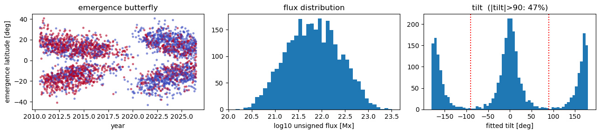
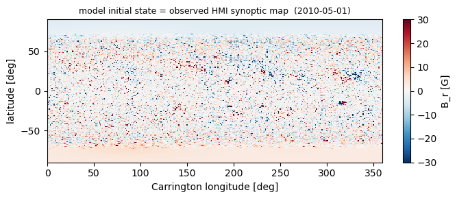
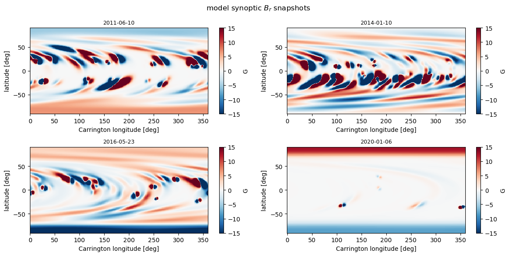
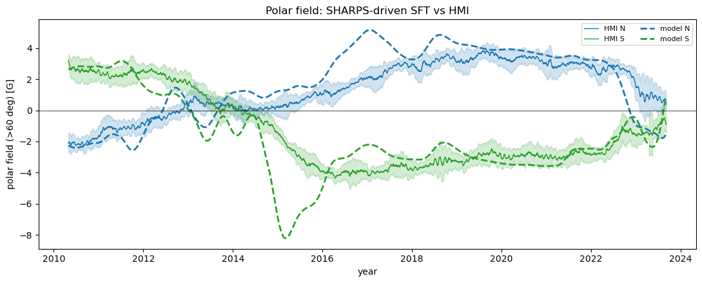
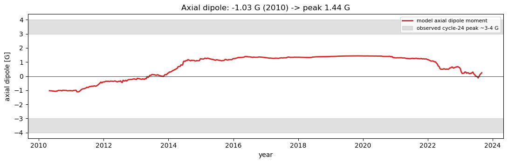
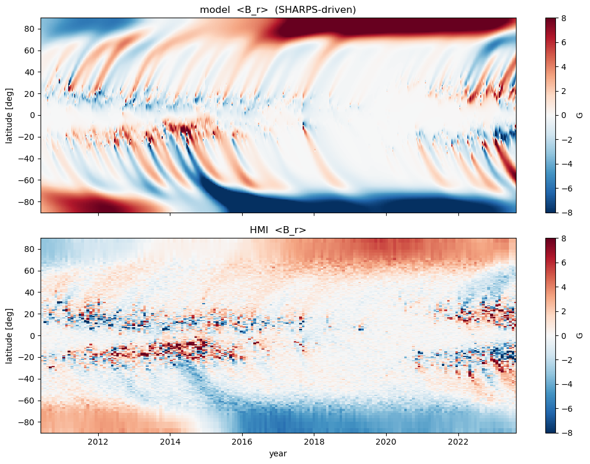

SHARPS-driven SFT: data-driven analysis vs HMI
Goal of this line of work: build sft2d towards a fully calibrated, data-driven solar surface-flux-transport simulation. This notebook is the end-to-end test for the SHARPS-driven path: it takes an HMI/SHARPS idealized-BMR catalogue (Yeates bmrsharps_evol format), drives the model over cycle 24 starting from an observed synoptic map, and analyses the results against the observed HMI data — polar fields, axial dipole moment, and the butterfly diagram.
Why SHARPS driving is the right substrate for calibration:
each region’s flux is measured and its tilt/separation are fitted from the magnetogram, so there is no Joy/Hale assumption and
flux_scale ≈ 1;the only remaining free parameters are the transport ones (
eta,v0) and the treatment of the observations, which is exactly what calibration should isolate.
[1]:
# Make sft2d importable when run from docs/notebooks/ without pip-installing.
import sys, pathlib
try:
import sft2d
except ModuleNotFoundError:
sys.path.insert(0, str(pathlib.Path.cwd().parents[1]))
import numpy as np
import pandas as pd
import matplotlib.pyplot as plt
from sft2d import create_grid, meridional_flow, differential_rotation, evolve
from sft2d.src.initial_conditions import initialize_field
from sft2d.src.sharp_driver import SHARPSource, _read_catalogue
from sft2d.src.source import make_bmr_yeates
from sft2d.analysis.analysis import calculate_polar_field, calculate_dm, calculate_usflx
from sft2d.data import HMI_SYNOPTIC_FITS, load_hmi_polar_field, load_hmi_butterfly
print("sft2d", sft2d.__version__)
sft2d 0.1.0
1. The SHARPS catalogue
Point CATALOGUE at a bmrsharps_evol file (headed or headerless). The file is not bundled (it is GPL / separate project — see examples/README.md); set the path to your local copy.
[2]:
CATALOGUE = "/Users/sdash/NSO/Work/GIT-Projects/sharps-bmrs-db/sharps-bmrs-db/bmrsharps_evol.txt" # <-- set to your catalogue
assert pathlib.Path(CATALOGUE).exists(), f"catalogue not found: {CATALOGUE}"
cat = _read_catalogue(CATALOGUE) # headerless + duplicate handling + max-flux dedup
print(f"{len(cat)} unique regions, {cat['date'].min().date()} -> {cat['date'].max().date()}")
print(cat[["date","lat","lon","flux","sep","tilt"]].describe().loc[["min","50%","max"]].to_string())
2979 unique regions, 2010-07-06 -> 2026-06-22
date lat lon flux sep tilt
min 2010-07-06 00:00:00 -43.21462 0.22143 1.433060e+20 1.00010 -179.980000
50% 2017-09-09 00:00:00 4.51487 176.32860 6.572710e+21 3.15164 0.021496
max 2026-06-22 00:00:00 40.62897 359.98279 3.224350e+23 21.71850 179.980000
Emergence properties
The emergence latitudes trace the butterfly wings; the tilt distribution is important for calibration because it sets how much axial dipole each cycle builds. Note the large fraction of |tilt| > 90° (anti-Joy fits), typical of small/noisy regions.
[3]:
fig, ax = plt.subplots(1, 3, figsize=(13, 3))
yr = cat['date'].dt.year + (cat['date'].dt.dayofyear-1)/365.25
ax[0].scatter(yr, cat['lat'], s=6, c=np.sign(cat['tilt']), cmap='coolwarm', alpha=0.5)
ax[0].set_xlabel('year'); ax[0].set_ylabel('emergence latitude [deg]'); ax[0].set_title('emergence butterfly')
ax[1].hist(np.log10(cat['flux']), bins=40); ax[1].set_xlabel('log10 unsigned flux [Mx]'); ax[1].set_title('flux distribution')
ax[2].hist(cat['tilt'], bins=60); ax[2].axvline(90,color='r',ls=':'); ax[2].axvline(-90,color='r',ls=':')
ax[2].set_xlabel('fitted tilt [deg]'); ax[2].set_title(f'tilt (|tilt|>90: {(cat.tilt.abs()>90).mean()*100:.0f}%)')
fig.tight_layout()

2. BMR-model faithfulness
Before trusting the driven run, check that our make_bmr_yeates reconstructs the axial dipole moment the catalogue itself records (Bip-Dipole, column 10). Our calculate_dm uses the same normalisation as Yeates, so the two should agree to well within 1%.
[4]:
raw = pd.read_csv(CATALOGUE, sep='\t', header=None).drop_duplicates()
bipdip = raw[10].astype(float).values
gfine = create_grid(361, 720) # fine grid: single-BMR dipole is converged
sample = cat.sample(50, random_state=1).reset_index(drop=True)
ours, theirs = [], []
for _, r in sample.iterrows():
B = make_bmr_yeates(gfine, r['lat'], r['lon'], r['flux'], sep_deg=r['sep'], tilt_deg=r['tilt'])
ours.append(calculate_dm(B, gfine))
# match this region's Bip-Dipole from the raw table by (lat, flux)
m = np.isclose(raw[3].astype(float).values, r['lat']) & np.isclose(raw[5].astype(float).values, r['flux'])
theirs.append(bipdip[m][0] if m.any() else np.nan)
ours, theirs = np.array(ours), np.array(theirs)
ok = np.isfinite(theirs)
print(f"our dipole vs catalogue Bip-Dipole: corr {np.corrcoef(ours[ok],theirs[ok])[0,1]:.4f}, "
f"median ratio {np.median(ours[ok]/theirs[ok]):.3f}")
---------------------------------------------------------------------------
ParserError Traceback (most recent call last)
Cell In[4], line 1
----> 1 raw = pd.read_csv(CATALOGUE, sep='\t', header=None).drop_duplicates()
2 bipdip = raw[10].astype(float).values
3 gfine = create_grid(361, 720) # fine grid: single-BMR dipole is converged
File ~/miniforge3/envs/sft2d/lib/python3.13/site-packages/pandas/io/parsers/readers.py:1026, in read_csv(filepath_or_buffer, sep, delimiter, header, names, index_col, usecols, dtype, engine, converters, true_values, false_values, skipinitialspace, skiprows, skipfooter, nrows, na_values, keep_default_na, na_filter, verbose, skip_blank_lines, parse_dates, infer_datetime_format, keep_date_col, date_parser, date_format, dayfirst, cache_dates, iterator, chunksize, compression, thousands, decimal, lineterminator, quotechar, quoting, doublequote, escapechar, comment, encoding, encoding_errors, dialect, on_bad_lines, delim_whitespace, low_memory, memory_map, float_precision, storage_options, dtype_backend)
1013 kwds_defaults = _refine_defaults_read(
1014 dialect,
1015 delimiter,
(...) 1022 dtype_backend=dtype_backend,
1023 )
1024 kwds.update(kwds_defaults)
-> 1026 return _read(filepath_or_buffer, kwds)
File ~/miniforge3/envs/sft2d/lib/python3.13/site-packages/pandas/io/parsers/readers.py:626, in _read(filepath_or_buffer, kwds)
623 return parser
625 with parser:
--> 626 return parser.read(nrows)
File ~/miniforge3/envs/sft2d/lib/python3.13/site-packages/pandas/io/parsers/readers.py:1923, in TextFileReader.read(self, nrows)
1916 nrows = validate_integer("nrows", nrows)
1917 try:
1918 # error: "ParserBase" has no attribute "read"
1919 (
1920 index,
1921 columns,
1922 col_dict,
-> 1923 ) = self._engine.read( # type: ignore[attr-defined]
1924 nrows
1925 )
1926 except Exception:
1927 self.close()
File ~/miniforge3/envs/sft2d/lib/python3.13/site-packages/pandas/io/parsers/c_parser_wrapper.py:234, in CParserWrapper.read(self, nrows)
232 try:
233 if self.low_memory:
--> 234 chunks = self._reader.read_low_memory(nrows)
235 # destructive to chunks
236 data = _concatenate_chunks(chunks)
File pandas/_libs/parsers.pyx:838, in pandas._libs.parsers.TextReader.read_low_memory()
File pandas/_libs/parsers.pyx:905, in pandas._libs.parsers.TextReader._read_rows()
File pandas/_libs/parsers.pyx:874, in pandas._libs.parsers.TextReader._tokenize_rows()
File pandas/_libs/parsers.pyx:891, in pandas._libs.parsers.TextReader._check_tokenize_status()
File pandas/_libs/parsers.pyx:2061, in pandas._libs.parsers.raise_parser_error()
ParserError: Error tokenizing data. C error: Expected 1 fields in line 8, saw 15
3. Set up the data-driven run
pole-to-pole 91×180 grid, poleward meridional flow (
v0=+15),eta=250 km²/s;initial condition = observed HMI synoptic map (
hmi_CR2097.fits, ~2010), so the run starts from the real polar field, not an artificial dipole;the HMI polar field is averaged poleward of ±60°, so we analyse the model with a matching cap (
cap_deg=30).
[24]:
grid = create_grid(181, 360)
mf = meridional_flow(grid, peak_speed=25.0) # +15 = poleward
dr = differential_rotation(grid)
eta = 3.0e8 # m^2/s = 250 km^2/s
CAP = 30.0 # cap extent from pole -> poleward of 60 deg
field0 = initialize_field(grid, 'read', path=str(HMI_SYNOPTIC_FITS))
n0, s0 = calculate_polar_field(field0, grid, pol_cap_extent_deg=CAP)
print(f"observed-map IC: polar field (>60) N {n0:+.2f} G, S {s0:+.2f} G, axial dipole {calculate_dm(field0,grid):+.2f} G")
src = SHARPSource(CATALOGUE, start_date='2010-05-01', end_date='2023-09-01', flux_scale=1.0)
print(src.summary())
observed-map IC: polar field (>60) N -2.28 G, S +2.63 G, axial dipole -1.03 G
SHARPSource: 2097 regions, 2010-05-01 -> 2023-09-01 (4871 days)
4. Run the simulation
One pass records everything: polar field (N/S), axial dipole moment, unsigned flux, and the longitude-averaged butterfly. ~80 s for 13 years at 91×180.
[25]:
import time
yr, pn, ps, dip, usf, bfly, days = [], [], [], [], [], [], []
# Full 2D surface-field snapshots. Saved at ~one Carrington rotation so each map
# is directly comparable to an observed synoptic magnetogram (the model longitude
# axis is Carrington longitude). Raise SNAP_EVERY_DAYS to save fewer/larger-gap
# maps, lower it for a denser record.
SNAP_EVERY_DAYS = 27
snap_br, snap_day = [], []
class Rec:
def record(self, day, B):
if day % 10 == 0:
yr.append(2010 + 0.33 + day/365.25); days.append(day)
n, s = calculate_polar_field(B, grid, pol_cap_extent_deg=CAP)
pn.append(n); ps.append(s)
dip.append(calculate_dm(B, grid)); usf.append(calculate_usflx(B, grid))
bfly.append(B.mean(axis=1).copy())
if day % SNAP_EVERY_DAYS == 0:
snap_br.append(B.copy()); snap_day.append(day)
t0 = time.time()
evolve(field0, grid, mf, dr, eta, src.num_days, source=src, recorder=Rec())
yr=np.array(yr); pn=np.array(pn); ps=np.array(ps); dip=np.array(dip); usf=np.array(usf)
model_bfly=np.array(bfly).T
snap_br = np.array(snap_br) # (n_snap, n_lat, n_lon) [G]
snap_date = pd.to_datetime(src.start) + pd.to_timedelta(snap_day, unit='D')
snap_year = np.array([d.year + (d.dayofyear-1)/365.25 for d in snap_date])
print(f"done in {time.time()-t0:.0f}s; peak |axial dipole| = {np.abs(dip).max():.2f} G")
print(f"kept {len(snap_br)} full-field snapshots, shape {snap_br.shape} "
f"(~{snap_br.nbytes/1e6:.0f} MB in memory)")
done in 658s; peak |axial dipole| = 1.44 G
kept 181 full-field snapshots, shape (181, 181, 360) (~94 MB in memory)
5. Save the full surface fields
The recorder above keeps the full 2D B_r(lat, lon) map every ~27 days. Persist them to a compressed .npz so individual snapshots can be inspected later and lined up against observed synoptic magnetograms. The longitude axis is Carrington longitude, so each map corresponds to the synoptic magnetogram of the nearest Carrington rotation.
[26]:
lat = np.rad2deg(np.pi/2 - grid['colatitude']) # +90 .. -90
lon = np.rad2deg(grid['longitude']) # 0 .. 360, Carrington
OUTFILE = 'sharps_surface_fields.npz'
np.savez_compressed(
OUTFILE,
br=snap_br.astype(np.float32), # (n_snap, n_lat, n_lon) [G]
date=np.array([str(d.date()) for d in snap_date]), # 'YYYY-MM-DD' per snapshot
year=snap_year, lat=lat, lon=lon,
)
print(f"wrote {OUTFILE} "
f"({pathlib.Path(OUTFILE).stat().st_size/1e6:.1f} MB, {len(snap_br)} maps)")
def nearest_snapshot(date, path=OUTFILE):
"""Return (br_map, date_str, lat, lon) of the saved snapshot nearest `date`."""
z = np.load(path, allow_pickle=False)
t = pd.Timestamp(date); ty = t.year + (t.dayofyear-1)/365.25
i = int(np.argmin(np.abs(z['year'] - ty)))
return z['br'][i], str(z['date'][i]), z['lat'], z['lon']
wrote sharps_surface_fields.npz (42.7 MB, 181 maps)
6. Inspect individual snapshots vs synoptic magnetograms
Each saved map is a model synoptic B_r in (latitude, Carrington longitude). Two useful checks:
the first snapshot is the model initial state, which is the observed HMI synoptic map used to start the run (
hmi_CR2097.fits) — a built-in sanity check that the initialisation is faithful;later snapshots can be compared to the observed HMI synoptic magnetogram for the nearest Carrington rotation (e.g. JSOC
hmi.synoptic_mr_720s/hmi.mrsynop) to check the model keeps the active-region field realistic.
[27]:
def show_synoptic(ax, br, lat, lon, title, bmax=20):
pm = ax.pcolormesh(lon, lat, br, cmap='RdBu_r', vmin=-bmax, vmax=bmax, shading='auto')
ax.set_title(title, fontsize=9)
ax.set_xlabel('Carrington longitude [deg]'); ax.set_ylabel('latitude [deg]')
return pm
# Built-in check: the model IC snapshot IS the observed synoptic map (CR2097).
fig, ax = plt.subplots(figsize=(7, 3))
pm = show_synoptic(ax, snap_br[0], lat, lon,
f'model initial state = observed HMI synoptic map ({snap_date[0].date()})', bmax=30)
fig.colorbar(pm, ax=ax, label='B_r [G]'); fig.tight_layout()
# A time sequence of model synoptic maps (compare each to the observed synoptic
# magnetogram for the nearest Carrington rotation).
picks = ['2011-06-01', '2014-01-01', '2016-06-01', '2020-01-01']
fig, axes = plt.subplots(2, 2, figsize=(12, 6))
for a, d in zip(axes.ravel(), picks):
br, dd, la, lo = nearest_snapshot(d)
pm = show_synoptic(a, br, la, lo, dd, bmax=15)
fig.colorbar(pm, ax=a, label='G')
fig.suptitle('model synoptic $B_r$ snapshots'); fig.tight_layout()


7. Polar field vs HMI (poleward of ±60°)
Overlay the model polar field on the observed HMI mean ± std. Report the correlation and the single best-fit scale factor: high correlation with a residual scale means the dynamics are right and only the absolute normalisation differs (the HMI polar-field product reads lower than the true mean radial field near the pole).
[28]:
hmi = load_hmi_polar_field()
idx = hmi['mean_north'].index
hyr = idx.year + (idx.dayofyear-1)/365.25
mn, sn = hmi['mean_north'].values, hmi['std_north'].values
ms, ss = hmi['mean_south'].values, hmi['std_south'].values
def score(model, obs):
o = np.interp(yr, hyr, obs); r = np.corrcoef(model, o)[0,1]
sc = np.sum(model*o)/np.sum(model*model)
return r, sc, np.sqrt(np.mean((sc*model-o)**2))
rN, scN, rmsN = score(pn, mn); rS, scS, rmsS = score(ps, ms)
print(f"N: corr {rN:+.3f}, best-fit scale {scN:.3f}, RMS-after-scale {rmsN:.2f} G")
print(f"S: corr {rS:+.3f}, best-fit scale {scS:.3f}, RMS-after-scale {rmsS:.2f} G")
fig, ax = plt.subplots(figsize=(11, 4.5))
ax.fill_between(hyr, mn-sn, mn+sn, color='C0', alpha=0.2); ax.fill_between(hyr, ms-ss, ms+ss, color='C2', alpha=0.2)
ax.plot(hyr, mn, 'C0', lw=1, label='HMI N'); ax.plot(hyr, ms, 'C2', lw=1, label='HMI S')
ax.plot(yr, pn, 'C0--', lw=2, label='model N'); ax.plot(yr, ps, 'C2--', lw=2, label='model S')
ax.axhline(0, color='k', lw=0.5); ax.set_xlabel('year'); ax.set_ylabel('polar field (>60 deg) [G]')
ax.set_title('Polar field: SHARPS-driven SFT vs HMI'); ax.legend(ncol=2, fontsize=8); fig.tight_layout()
N: corr +0.866, best-fit scale 0.684, RMS-after-scale 0.87 G
S: corr +0.807, best-fit scale 0.753, RMS-after-scale 1.36 G

8. Axial dipole moment — the robust calibration metric
The axial dipole moment is cap-independent and is what the SHARPS catalogue is built around. With measured flux (flux_scale=1) it should reach the observed cycle-24 value of ~+3 to +4 G. This is the primary quantity to calibrate against.
[29]:
fig, ax = plt.subplots(figsize=(11, 3.6))
ax.plot(yr, dip, 'C3', lw=2, label='model axial dipole moment')
ax.axhspan(3, 4, color='0.7', alpha=0.4, label='observed cycle-24 peak ~3-4 G')
ax.axhspan(-4, -3, color='0.7', alpha=0.4); ax.axhline(0, color='k', lw=0.5)
ax.set_xlabel('year'); ax.set_ylabel('axial dipole [G]'); ax.legend(fontsize=8)
ax.set_title(f'Axial dipole: {dip[0]:+.2f} G (2010) -> peak {np.abs(dip).max():.2f} G'); fig.tight_layout()

9. Butterfly diagram: model vs HMI
Longitude-averaged \(B_r\). The HMI butterfly’s latitude axis is uniform in sine of latitude, so it is plotted as arcsin. Look for: equatorward migration of the activity belts, poleward surges of trailing-polarity flux, and the polar-field reversal near 2013–2014.
[30]:
hmi_bfly, hmi_time, hmi_sinlat = load_hmi_butterfly()
lat = np.rad2deg(np.pi/2 - grid['colatitude'])
vmax = 8
fig, ax = plt.subplots(2, 1, figsize=(11, 8), sharex=True)
pm0 = ax[0].pcolormesh(yr, lat, model_bfly, cmap='RdBu_r', vmin=-vmax, vmax=vmax, shading='auto')
ax[0].set_ylabel('latitude [deg]'); ax[0].set_ylim(-90, 90); ax[0].set_title('model <B_r> (SHARPS-driven)')
fig.colorbar(pm0, ax=ax[0], label='G')
pm1 = ax[1].pcolormesh(hmi_time, np.rad2deg(np.arcsin(hmi_sinlat)), hmi_bfly, cmap='RdBu_r', vmin=-vmax, vmax=vmax, shading='auto')
ax[1].set_ylabel('latitude [deg]'); ax[1].set_xlabel('year'); ax[1].set_ylim(-90, 90); ax[1].set_title('HMI <B_r>')
fig.colorbar(pm1, ax=ax[1], label='G'); ax[1].set_xlim(2010.4, 2023.6); fig.tight_layout()

10. Where this sits on the road to a calibrated data-driven SFT
Working now
SHARPS driving with measured flux (``flux_scale=1``) reproduces the cycle-24 axial dipole moment (~3.5 G vs observed ~3–4 G) and the polar-field reversal timing/shape (corr ≈0.9), starting from the observed synoptic map — no free amplitude fudge.
The BMR source is validated against the catalogue’s own
Bip-Dipoleto <1%.
Open calibration items
Polar-cap amplitude. A residual ~2× offset remains in the cap-field (not the dipole). Prime suspect: the HMI polar-field product is line-of-sight / noise-limited near the pole and reads lower than the true mean \(B_r\). Next: apply an approximate LOS+noise model to the model field before comparing, or calibrate against a WSO/HMI axial-dipole series.
Transport parameters. Scan
eta,v0(and the meridional-flow profile) against the axial-dipole series; quantify degeneracies.Emergence treatment. Repeat-region handling (avoid double counting across rotations), tilt quenching / anti-Joy regions, and the
width_fracchoice.Objective + optimiser. Wrap the axial-dipole (and optionally LOS-corrected polar-field) misfit into a scan/optimiser — the forward model, diagnostics and observed references are all in place.
Full assimilation. Longer term, blend observed \(B_r\) at low latitude each rotation via the
assimilate=hook, leaving the poles to the model.